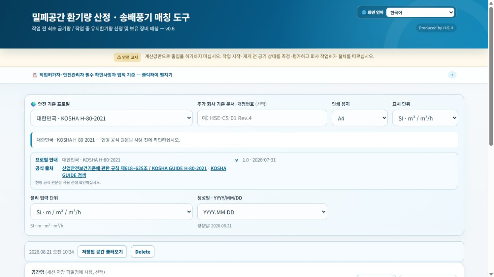
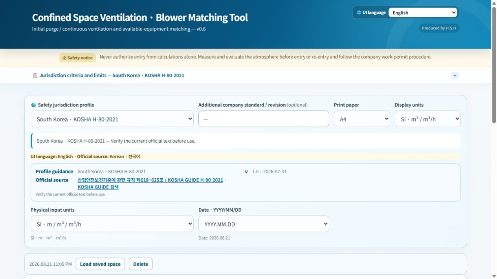

1. 화면 언어와 안전 기준
화면 언어와 법규 프로필은 별개입니다. 작업 장소에 맞는 안전 기준을 선택하고, 화면 언어는 읽기 편한 언어로 선택합니다.
1. Screen language and safety profile
Language does not choose the law. Select the jurisdiction profile for the workplace, then select the language that helps the user read the interface.

한국어 시작 화면 / Korean start screen

영어 시작 화면 / English start screen
2. 계산 방식과 공간 체적
지속 발생원이 특정되지 않으면 체적배수법을 사용합니다. 구역을 더하거나 빼서 실제 공기 체적을 입력합니다.
발생량을 아는 경우에는 희석법(발생량 입력)을, 발생량을 모르는 경우에는 측정값 기반 역산을 사용합니다.
English: Use volume exchange when no continuous generation source is identified. Use the known-generation or measured-concentration method only when the required input data are available.
3. 작업조건, 결과, 장비 매칭 / Conditions, results, and blower matching
초기 급기 배수와 작업 중 유지 환기횟수는 적용 프로필과 현장 위험성평가에 맞춰 확인합니다. 기본값보다 낮추기 전에는 근거와 승인 절차를 확인합니다.
Confirm initial-purge and continuous-airflow criteria against the selected profile and site risk assessment. Do not reduce defaults without documented basis and approval.
필요환기량을 확인합니다. 체적배수법에서는 최초 급기량과 작업 중 유지 환기량을 구분해 봅니다.
Review required airflow. For volume exchange, distinguish the initial purge volume from continuous airflow during work.
정격풍량×효율, 제조사 운전점 또는 현장 실측 중 실제 근거에 맞는 장비 풍량을 선택해 대수와 여유율을 확인합니다.
Use the airflow basis that matches the evidence—rated flow with correction, manufacturer operating point, or field measurement—then review quantity and reserve margin.
4. 결과서 인쇄 / Print the report
결과서는 작업허가서 첨부용 계획 자료입니다. 필요하면 번역 보조 페이지를 추가할 수 있지만, 적용 법규의 공식 원문과 사업장 절차가 우선합니다.
The report is a planning attachment for the work permit. Supplementary translations can be printed, but the official legal source and the site procedure take precedence.